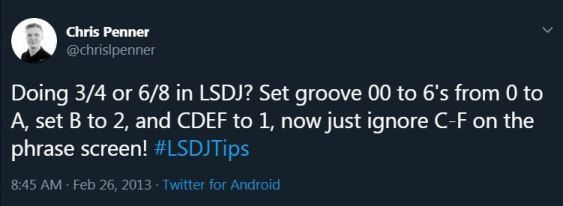

**Intense Tech con Defense Mech -- Un groove grooveante y trucos para los ticks. Parte dos**
- Posted May 21st, 2019 by [Pixel
Guy](https://apixelguy.com)
*Artículo Original de [DEFENSE
MECHANISM](../en/07-groovy-groove-and-tick-tricks-part-2.md.html). Traducción al
Español por [Pixel Guy](https://apixelguy.com).*
¡Bienvenidos una vez más a *Intense Tech*! En esta
ocasión continuaremos explorando los *grooves*. Una vez que hayas leído
esta lección deberás de tener algunos trucos extra bajo la manga para
hacer el *groove* de tus canciones aún más intenso.
------------------------------------------------------------------------
Ajustar un *groove* a 2, 3 o inclusive valores más altos, puede ser útil
cuando se están creando arpegios o cambios en el *duty cicle*. Esto
resultará en que la *table* corra más lento que la configuración por
defecto. Los comandos Groove también pueden ser combinados con comandos
Hop para crear cambios complejos en el tiempo de *phrases* y *tables*.
En este ejemplo usando la canción [*Zenarchy,* de
Hypnogram](https://smokingmirrors.bandcamp.com/album/eye), se puede
apreciar el efecto de combinar comandos Hop con comandos Groove.
Recuerden que el primer dígito de los comandos H especifica el número de
veces que saltará y el segundo dígito especifica hacia dónde lo hará.
También recuerda que cada comando Groove es ajustado al número de
*ticks* que cada línea durará.

Otro truco que aprendí de Zef; es que puedes, de hecho, usar *grooves*
para escribir en otra signatura de compás, como 3/4, sin utilizar un
comando Hop.
[](https://twitter.com/chrislpenner/status/306414658603077633)
Traducción del *tweet*: «¿(Estás tratando de) escribir en 3/4 o 6/8 en
LSDj? Ajusta Groove `00` a (una duración de) `6` (*ticks*) de la línea 0
a la A; ajusta B a `2` y C, D, E y F a `1`. ¡Ahora solo ignora de la línea C
a la F en la pantalla Phrase! #LSDJTips»
Esta es solo una forma de ajustar un *groove* a 3/4; aunque, por
supuesto, hay más opciones. Demos un vistazo a un ejemplo de cómo podría
ser utilizado.

De manera similar; puedes utilizar *grooves* para expresar tresillos.
Usar el *groove* por defecto de `6/6` es útil; dado que seis es divisible
entre dos y tres respectivamente. Esto nos permite poner fácilmente tres
notas (un tresillo de corcheas) en el espacio de dos corcheas. Ya que
dos corcheas son iguales a veinticuatro *ticks*; necesitamos dividir
veinticuatro entre tres, lo que da como resultado ocho. Esto quiere
decir que cada nota del tresillo de corcheas durará ocho *ticks*.
Utilizando el sistema en el que emparejamos el número de Groove con el
número de *ticks* que este durará; podemos colocar un comando G08 y así
sabremos que cada línea durará ocho *ticks*. Puesto que esto son dos
*ticks* más por nota que los de la configuración por defecto de seis;
necesitaremos compensar los *ticks* extra sustrayendo del número total
de *ticks* los adicionales al final de la *phrase* usando otro comando G
o un comando H para saltar a la siguiente *phrase*. En este ejemplo se
usan tres notas, por lo que se necesitan sustraer seis *ticks* del final
de la *phrase* para permitir que la siguiente comience en el tiempo uno.
Esto es sencillo de realizar si se coloca un comando H00 para saltarnos
la última línea de la *phrase* (la cual dura seis *ticks*).

Por último, y para terminar por ahora con los *tips*, veremos otro
ejemplo de Hypnogram, con un simple, aunque efectivo, *delay* a dos
canales. Utilizando dos *grooves* puedes fácilmente desplazar los
canales Pulse de tal forma que uno haga de eco del otro usando un
comando Groove para luego reiniciar el efecto de *delay* utilizando un
segundo comando Groove. Ajustar la primera línea del segundo canal Pulse
para que dure diez *ticks* (0A en hexadecimal) en el primer Groove
quiere decir que cada nota posterior será retrasada cuatro *ticks*. En
la siguiente *phrase* regresaremos a Groove 0, por lo que cada línea
durará seis *ticks*, pero se mantendrá el retraso de cuatro *ticks*.
Reiniciaremos el efecto al final del segundo Groove haciendo que la
última línea dure solo dos *ticks*. En este ejemplo también he añadido
un poco de *finetune* a los canales Pulse para ayudar a engrosar un poco
el sonido. Primero escucharás un canal Pulse solo, después escucharás el
segundo canal añadido con un poco de *delay*.

------------------------------------------
¡Espero que hayas disfrutado este recorrido por los grooves y los ticks! Gracias a todos mis *patrons* por su apoyo. Si
quisieras apoyarme, por favor considera [unirte a mi Patreon](https://patreon.com/defensem3ch).
Significaría mucho y me ayudaría a continuar creando y alojando este contenido,
pagar por las traducciones ¡y tener sus ideas para próximos artículos!


¡Muchas gracias por leer y hasta la próxima! Se despide, [DEFENSE MECHANISM](https://defensemech.com)
-----------------------------------------
Anterior: [ <-- Parte uno ](06-un-groove-grooveante-y-trucos-para-los-ticks-parte-uno.md.html) Siguiente: [ El LSDj Wave Cruncher de DOTCNT --> ](08-el-lsdj-wave-cruncher-de-dotcnt.md.html)
-----------------------------------------